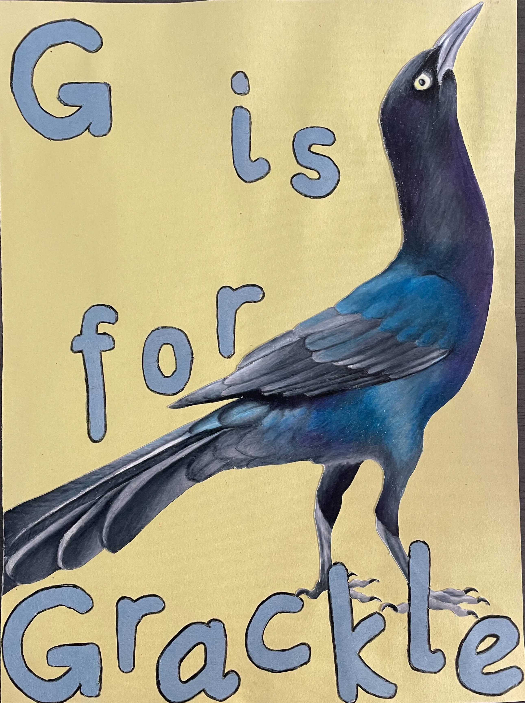

|
|
|

© Dustin Angell
|
Corina Logan (she/her)
Group Leader
Department of Human Behavior, Ecology and Culture
Max Planck Institute for Evolutionary Anthropology
corina_logan [at] eva.mpg.de
Home | CV | Ethical publishing | Español

|

|
THE LAB
HUMANS

Corina Logan (she/her) (left)
Principal Investigator
Kelsey McCune (she/her) (middle)
Postdoc fellow and co-founder of ManyIndividuals (2018-)
Established the Tempe, Arizona field site and ran it for 2 years, then moved the site to Woodland/Sacramento, California and ran it there for 2 years. Developed a new component to the research program investigating space use and linking it with wild and captive measures of exploration, as well as developing the individual differences assays. Co-founded ManyIndividuals and is investigating whether increasing behavioral flexibility in disturbance-resilient blue jays and disturbance-sensitive Florida scrub-jays improves their success in human modified environments.
Christa Rolls (she/her) (right)
Research Technician (2020-)
Assists with running the long-term grackle field site in Woodland/Sacramento, California, focusing on trapping and color banding grackles, conducting focal follows, GPS tracking radio-tagged grackles, conducting point counts to determine population density, preparing data for analysis, and writing articles.
FORMER LAB MEMBERS
Vincent Kiepsch
Max Planck Institute for Evolutionary Anthropology HIWI (2020-2022 & summer 2023)
Hypothesis-blind video coder for experiments and interobserver reliability analyses: 20% of the exploration and boldness videos from Arizona, 100% of exploration videos from Woodland and boat-tailed grackles, plus some multi-access box video coding from Arizona and switch latencies from Woodland
Lea Gihlein
University of Leipzig student (2021-2022)
Bachelor's Thesis: Are there differences in behavioral traits between populations across the great-tailed grackle's geographic range? Also a hypothesis-blind video coder for interobserver reliability analyses: 20% of the reversal learning and multi-access box videos from California
Josie Hubbard
University of California Davis PhD student (2021)
Assisted with comparative cognition tests of temporarily captive grackles in California
Alexis Breen
Postdoc (2020-2021): developed a protocol for coding exploration videos, and coded videos for the Arizona and California populations
Research Assistant (2013): Assisted with New Caledonian crow data collection
Zara Marfori
Research Technician (2020-2021)
Assisted with running the long-term grackle field site in Woodland, CA, focusing on running the behavioral choice tests for grackles that are temporarily held in the aviaries
Tiana Lam
ASU Undergraduate (2020)
Obtains behavioral data from videos of the grackle comparative cognition experiments and assays
Sierra Planck
ASU Undergraduate (2020)
Assisted with running the long-term grackle field site at Arizona State University, including conducting trap habituation and assisting with trapping grackles. Obtains behavioral data from videos of the grackle comparative cognition experiments and assays
Anja Becker
Max Planck Institute for Evolutionary Anthropology HIWI (2019-2020)
Hypothesis-blind video coder for 20% of the reversal learning videos for interobserver reliability analyses
Sophie Kaube
Max Planck Institute for Evolutionary Anthropology HIWI (2019)
Hypothesis-blind video coder for 20% of the detour videos for interobserver reliability analyses
Brynna Hood
ASU Undergraduate (2019-2020)
Assisted with running the long-term grackle field site at Arizona State University, including conducting trap habituation and assisting with trapping grackles. Obtains behavioral data from videos of the grackle comparative cognition experiments and assays
August Sevchik
ASU Undergraduate and Research Technician (2018-2020)
Assisted with running the long-term grackle field site at Arizona State University, including conducting trap habituation and assisting with trapping and processing grackles, conducting nest checks and GPS tracking radio-tagged grackles. Carried out his senior thesis on sex differences in grackle genetic relatedness
Maggie MacPherson
Postdoc (2019-2020)
Conducted comparative cognition experiments in the aviaries
Sawyer Lung
Research Technician (2020)
Conducted nest checks and GPS tracking of radio-tagged grackles
Melissa Folsom
Research Technician (2019-2020)
Assisted with running the long-term grackle field site at Arizona State University, focusing on trapping and color banding grackles, managing undergraduates, and conducting nest checks, focal follows, and GPS tracking radio-tagged grackles
Luisa Bergeron
Research Technician (2018-2019):
Assisted with setting up and running the long-term grackle field site at Arizona State University, focusing on trapping and color banding grackles, managing undergraduates, and conducting aviary experiments
UCSB Undergraduate (2014-2015):
Gathered behavioral observations on grackles in the field and assisted with cognitive tests
Carolyn Rowney
Lab Manager (2017-2019)
Set up the lab work to run efficiently and effectively, coordinated with collaborators to ensure we met their needs, designed new DNA extraction methods
Sam Muñoz
ASU Undergraduate (2020)
Assisted with running the long-term grackle field site at Arizona State University, including conducting trap habituation and assisting with trapping grackles
Jennifer Berens
ASU Undergraduate (2019-2020)
Assisted with running the long-term grackle field site at Arizona State University, including conducting trap habituation and assisting with trapping grackles. Conducted her senior thesis on validating morpohological condition indices and their relationship with reproductive success
Kaylee Delcid
ASU Undergraduate (2019-2020)
Assisted with running the long-term grackle field site at Arizona State University, including conducting trap habituation and assisting with trapping grackles. Conducted systematic point counts to determine great-tailed grackle density in Tempe, and an independent project on grackle play behavior
Michael Pickett
ASU Undergraduate (2019-2020)
Assisted with running the long-term grackle field site at Arizona State University, including conducting trap habituation and assisting with trapping grackles
Emily Blackwell
ASU Undergraduate (2019-2020)
Assisted with running the long-term grackle field site at Arizona State University, including conducting trap habituation and assisting with trapping grackles
Sam Bowser
ASU Undergraduate (2019-2020)
Assisted with running the long-term grackle field site at Arizona State University, including conducting trap habituation and assisting with trapping grackles
Amanda Overholt
ASU Undergraduate (2019)
Assisted with running the long-term grackle field site at Arizona State University, including conducting trap habituation and assisting with trapping grackles
Elise Lange
ASU Undergraduate (2019)
Assisted with running the long-term grackle field site at Arizona State University, including conducting trap habituation and assisting with trapping grackles
Aldora Messinger
ASU Undergraduate (2018-2019)
Assisted with running the long-term grackle field site at Arizona State University, including conducting trap habituation and assisting with trapping and processing grackles
Olateju Ojekunle
ASU Undergraduate (2018-2019)
Assisted with running the long-term grackle field site at Arizona State University, including conducting trap habituation, assisting with trapping and processing grackles, and weighing the grackles that were temporarily held in aviaries
Adriana Boderash
ASU Undergraduate (2018-2019)
Assisted with running the long-term grackle field site at Arizona State University, including conducting trap habituation and assisting with trapping and processing grackles
Justin Hunyh
ASU Undergraduate (2019)
Assisted with running the long-term grackle field site at Arizona State University, including conducting trap habituation
Elysia Mamola
ASU Undergraduate (2018-2019)
Assisted with running the long-term grackle field site at Arizona State University, including conducting trap habituation, assisting with trapping and processing grackles, and examining red and white blood cells
Rita Barakat
ASU Undergraduate (2018-2019)
Assisted with running the long-term grackle field site at Arizona State University, including conducting trap habituation, and assisting with trapping and processing grackles
Michael Guillen
ASU Undergraduate (2018-2019)
Assisted with running the long-term grackle field site at Arizona State University, including conducting trap habituation
Aelin Mayer
Maricopa Community College Undergraduate (2017-2018)
Assisted with running the long-term grackle field site at Arizona State University, including conducting trap habituation
Brianna Thomas
ASU Undergraduate (2018)
Assisted with running the long-term grackle field site at Arizona State University, including conducting trap habituation
Sofija Savic
ASU Undergraduate (2018)
Assisted with running the long-term grackle field site at Arizona State University, including conducting trap habituation
Nancy Rodriguez
ASU Undergraduate (2017-2018)
Helped set up the grackle project at Arizona State University and conducted trap habituation
Zoe Johnson-Ulrich
Postdoc (2018)
Helped set up the grackle project at Arizona State University and conducted aviary experiments
Brigit Harvey
UCLA Undergraduate (2014-2015)
Investigated cognition in California scrub-jays
Michelle Gertsvolf
UCSB Undergraduate (2015)
Assisted with grackle cognitive tests and field observations
Soumya Suresh
UCSB Undergraduate (2015)
Assisted with grackle field observations
Maya Shoemaker
Volunteer (Santa Barbara, CA) (2015)
Assisted with grackle field observations
Christin Palmstrom
UCSB Undergraduate (2013-2015)
Validated field methods for approximating endocranial volume in grackles and investigated social learning
Linnea Palmstrom
UCSB Undergraduate (2014-2015)
Assisted with grackle cognitive tests and analyzed videos of lek-mating birds
Mackenzie Zisser
UC Berkeley Undergraduate (2014)
Gathered and analyzed videos of lek-mating birds
Deanna Falge
UCSB Undergraduate (2013-2014)
Gathered data on great-tailed grackle social interactions and breeding behavior
|
Grackle art by Kelsey

© Kelsey McCune

© Kelsey McCune
MEET THE GRACKLES...
...in Lake Placid, Florida (boat-tailed; 2022-2024)
...in Sacramento, California (2021)
...in Tempe, Arizona (2018-2020)
...in Santa Barbara, California (2014-2015) - see below
GRACKLES: SANTA BARBARA, CALIFORNIA

© Corina Logan
Tequila - Adult male
Leg bands: Yellow / Purple - Sep 2014
He preferred to drop heavy rather than light objects into a water tube to raise the water level to reach floating food, and he changed his preference in a follow up experiment where heavy objects were no longer functional

© Corina Logan
Cerveza - Adult female
Leg bands: Blue / Orange - Sep 2014
She loves magnetism!

© Corina Logan
Charlie - Adult female
Leg bands: White / White - Dec 2013
Our first grackle! We banded her when she was a juvenile (her eyes were still brown instead of the adult yellow) and saw her grow into an adult. Her first breeding season was Mar-Aug 2014
Margarita - Adult female
Leg bands: Purple / Blue - Sep 2014
She also preferred to drop heavy rather than light objects and she loves magnetism too!

© Corina Logan
Michelada - Adult female
Leg bands: Orange / Red - Sep 2014
She was the fastest bird to learn to reverse a previously trained preference

© Corina Logan
Mojito - Adult male
Leg bands: Red / Green - Sep 2014
We banded and released him because the aviary was full at the time. You can see him in the wild flock with Tequila, Michelada, Cerveza, and Charlie at East Beach and the Santa Barbara Zoo
Chicha - Adult female
Leg bands: Blue / Red - Jan 2015
We banded and released her. You can see her in the wild flock with Charlie at East Beach

© Corina Logan
Batido - Adult male
Leg bands: Orange / Purple - Jan 2015
He preferred to drop heavy objects rather than light objects into a water tube and he hides under tables when raptors fly overhead

© Corina Logan
Horchata - Adult female
Leg bands: Green / Red - Jan 2015
She was the slowest bird to learn to reverse a previously trained preference

© Corina Logan
Jugo - Adult male
Leg bands: Red / Blue - Jan 2015
He always has a leaf or a piece of tape or something in his bill and he likes to put these objects in water
Refresco - Adult male
Leg bands: Purple / Yellow - Jan 2015
He preferred to drop heavy rather than light objects into a water tube to raise the water level to reach floating food, and he changed his preference in a follow up experiment where heavy objects were no longer functional
|
Code of conduct
We conduct open, verifiable, ethical research
Our goal is to ethically conduct and promote rigorous research. We avoid exploiting ourselves as scientists, we facilitate equity and diversity by ensuring that no one is discriminated against when reading research outputs, and we make publishing choices that keep funds in academia (see article and presentation for background). We use the mechanisms of transparency and verifiability to achieve this goal so anyone can evaluate our contributions at every step of the research process.
All research that generates experimental data starts off as a registered report (study plan is peer reviewed before data collection/analysis starts) at Peer Community in Registered Reports. We share our datasets and code. We follow the ICMJE guidelines to ensure that all authors deserve the credit and that they receive credit where credit is due.
If research outputs are disseminated via a journal (rather than only at Peer Community In), the journal must have the following features (why? See Logan 2017 and Corina's ethical publishing page):
Be 100% open access
Select articles based on scientific validity, not subjective impact
Be published by an ethical publisher (e.g., non-profit, researcher run)
Is not part of a contract where institutes pay to publish open access (e.g., read and publish agreements, transformative agreements - read why these are unethical here) (note: institutes pre-paying APCs in batches at a journal is ok as long as there is no contract)
The review history must be publicly available
The article must be published under a CC BY license
It should be free to publish (no APCs) or very cheap
We respect individuals who participate in our experiments
We respect the individuals who collaborate with us to provide us with the data on which our science relies, regardless of their species. Their well being is of utmost importance, and we take extra care when we are fully responsible for them (i.e., when conducting behavioral choice tests in captivity).
We strive to take anti-racist and anti-sexist action
Selection of new team members is designed to counteract racist/sexist biases (details here)
We recognize that some lab members require additional supports to safely conduct their work (as in the Safer Science seminar by Amelia-Juliette Demery and Monique Pipkin). We strive to work together to develop and implement these supports
We implement learnings from anti-racist and anti-sexist resources such as those from Dr. Romero-Olivares lab
We cultivate a harassment-free and welcoming environment
Vea una versión en Español
Siehe eine Version auf Deutsch
All members of the lab, along with visitors, are expected to agree with the following code of conduct. We will enforce this code as needed. We expect cooperation from all members to help ensure a safe and welcoming environment for everybody.
The Quick Version
The lab is dedicated to providing a harassment-free and welcoming experience for everyone, regardless of gender, gender identity and expression, age, sexual orientation, disability, physical appearance, body size, race, or religion (or lack thereof). We do not tolerate harassment of lab members in any form. Sexual language and imagery is generally not appropriate for any lab venue, including lab meetings, presentations, or discussions. (However, do note that we work on biological matters so work-related discussions of e.g., animal reproduction are appropriate.) We value individual differences and strive to create a welcoming environment for lab members.
The Less Quick Version
Harassment includes offensive verbal comments related to gender, gender identity and expression, age, sexual orientation, disability, physical appearance, body size, race, religion, sexual images in public spaces, deliberate intimidation, stalking, following, harassing photography or recording, sustained disruption of talks or other events, inappropriate physical contact, and unwelcome sexual attention.
Members asked to stop any harassing behavior are expected to comply immediately.
If you are being harassed, notice that someone else is being harassed, or have any other concerns, please contact Corina Logan (corina_logan [at] eva.mpg.de) immediately. If Corina is the cause of your concern, Margaret Tarampi (margaret [at] tarampi.com) is a good informal point of contact; she does not work for Corina or the Max Planck Institute for Evolutionary Anthropology, and has agreed to mediate. For official concerns, please contact the Max Planck Institute for Evolutionary Anthropology's Ombudsperson or Equal Opportunity Commissioner.
We realize that people come from all over the world to work on research projects in our lab, and we strive to make everyone feel welcome. For example, English may not be the native language of many lab members; therefore, we will take the time to go slowly and prioritize understanding over speed or convenience. As well, many lab members are multi-lingual, which can help facilitate communication.
We expect members to follow these guidelines at any lab-related event.
These Lab Interpersonal Interactions are based on Titus Brown's who cites the original source and credit: http://2012.jsconf.us/#/about & The Ada Initiative. Please help by translating or improving: http://github.com/leftlogic/confcodeofconduct.com. This work is licensed under a Creative Commons Attribution 3.0 Unported License
Professional behavior at work
All lab members are expected to behave professionally at work.
Be on time
No verbal abuse (e.g., belittling, demanding, accusing, blaming)
Work efficiently and effectively - you are responsible for managing interruptions (i.e., focus on work when you are at work)
Follow all rules to ensure your actions comply with permits, land owner wishes, lab policies, and common courtesy to the grackles and to people
If you encounter a problem, figure out at least one potential solution when discussing it with team members, and take charge of implementing the solution if you are an appropriate person to do so
If someone receives two warnings for breach of professional behavior, they will be removed from the team upon their second warning.
|
|